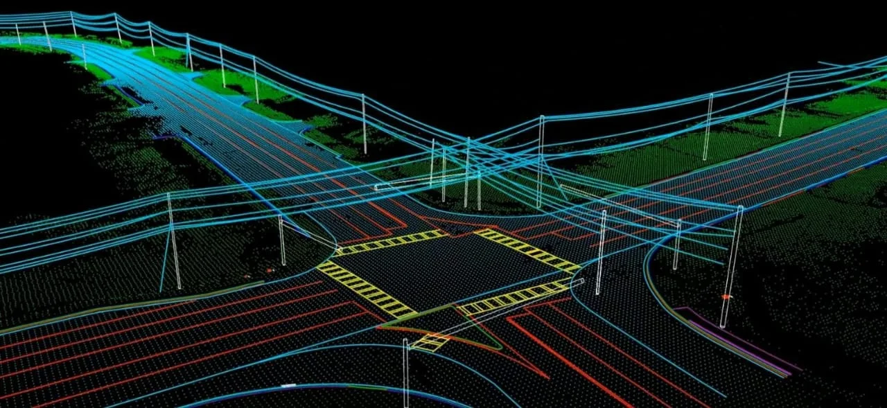
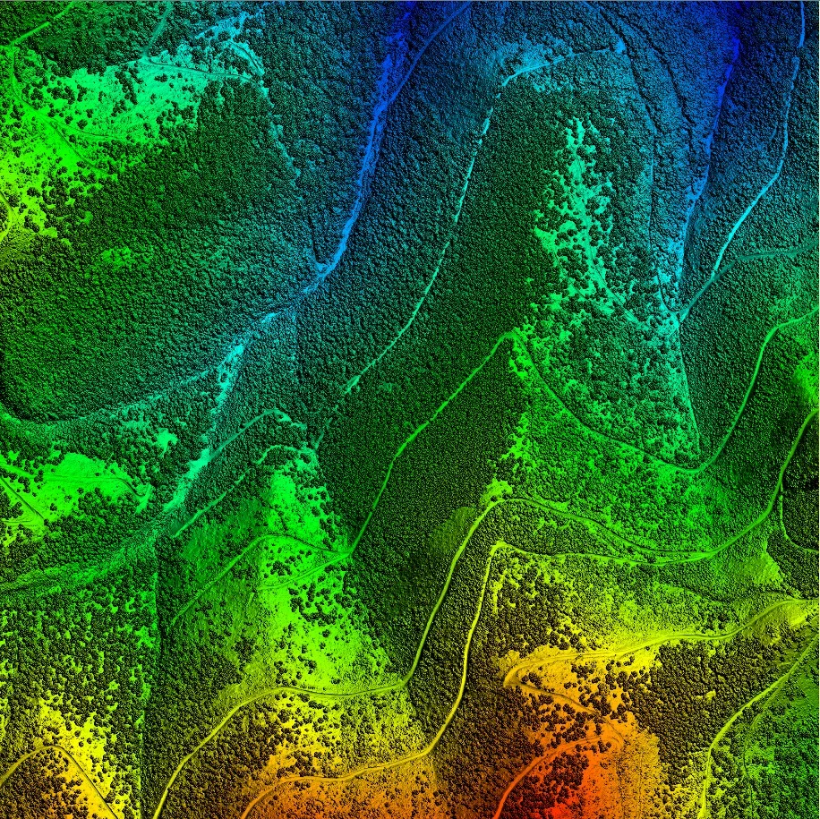
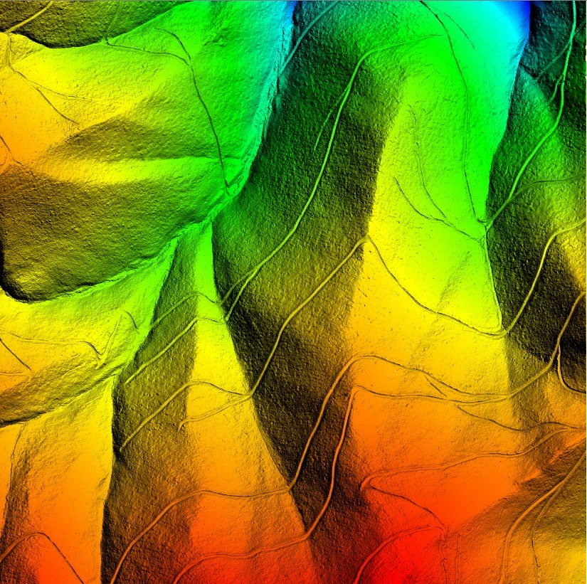
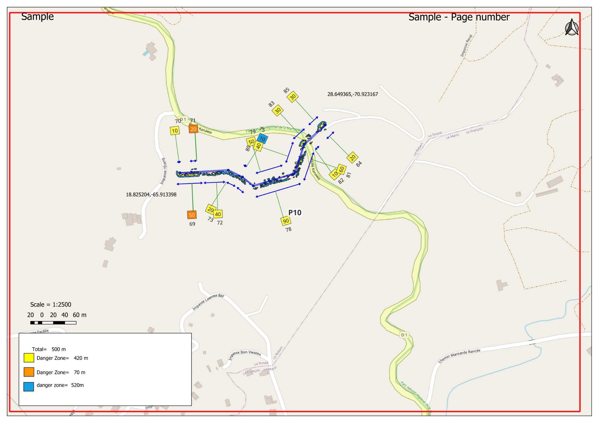
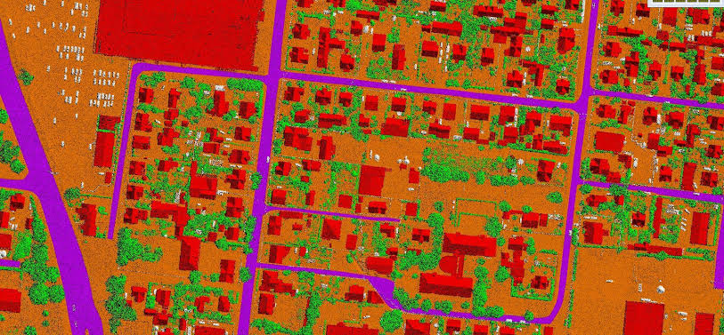

Utility
Powerline Corridor Analysis
3D corridor view showing utility structures, conductors and surrounding classified data.
A curated showcase built from the imagery you supplied for the website.
3D corridor view showing utility structures, conductors and surrounding classified data.

Spatial visualization of lines, structures, terrain and site context.

Dense classified scene with buildings, vegetation and infrastructure separated into usable classes.

Map-based spatial data management and visualization environment.

Raster-style surface visualization for terrain and landscape analysis.

Terrain representation suitable for mapping and engineering analysis.

Map layout showing measured segments and danger-zone outputs along a corridor.

Structured 3D building geometry for engineering and modeling workflows.

Survey imagery connected with elevation products and orthophoto processing.